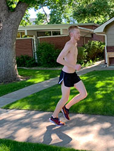

Training
For training, the first thing that I can say has helped me the most is time. Over time, I have found what types of training work for me, what I like, and what I stay away from. After anything that anyone can teach someone about training and tips for staying healthy, over time I have learned what will make me a faster runner. However, there are a few specific types of running that I tend to stick to.
The Simple Run
The first type of training that I like to do is the most often training that I like to do. It sounds obvious, but it is to just go for a run. The effort level is not racing, but I am exhausted after the run. There isn’t much more to it, other than going for a run. This could range from 3 miles to 10 miles or more, and I base it all off of feeling on that specific day.
Above all other kinds of workouts and training I believe that the simple run is the most important. Although I like to chase goals and set new personal bests, I run simply for the love of running. Going out and not having to worry about pace, how long I want to run, or how far I need to go is one of the most freeing feelings that I have experienced. Loving to run is why I started this journey, and it is crutial to remember why I took the first step.
The Long Run
The second type of training I consistently do is the long run. This is the run that I only do once a week, usually on the same day every week. The effort level on this run is an easy pace that I can sustain over a long period of time. The distance of these runs is really anywhere above 10 miles, but usually is based off of time. These runs for me usually last anywhere between and hour and two hours. These are designed purely to put miles on my legs so races are easier down the road.
Speed Work
The last type of training that I do regularly is speed work. After an aerobic base is built, putting some speed in my legs is crucial to running fast times at races. Speed work falls in a wide variety of forms. For example one type of speed training that I like to do is 30 repetitions of 45 seconds of hard running, and followed by 15 seconds of very easy jogging. Another example, is three or four repetitions of hard, one-miles, with easy miles in between each.
Even though speed work is the hardest day to get through, I believe it is one of the key aspects to breaking a personal record. Forcing yourself to run fast at different timed intervals allows your body to become more comfortable at being uncomfortable. When it comes to race day, the effort level will always be the same. The difference is how much you can put out at that effort level. Integrating speed work into a training plan can lead to massive benefits.
Days Off
Believe it or not, taking one to three days of per week is as important as the running itself. Over the course of the week, running and logging mile after mile puts an incredible amount of stress on your body, especially your legs. Taking a day to rest, recover, and stretch helps rebuild the muscle that is damaged while running. When taking a day off, it is often that I notice that the following day I feel much stronger and healthier because my legs were able to recover.
Not taking days off can lead to two serious consequences. Running for 7 or more days in a row, in my experience, leads to negative trainging. Sometimes, it is easy to get caught inside the end goal, and not pay attention to what your body is telling you. All you can think is, "I need to put the miles in today," despite your body screaming at you to stop. Even if you go out and log the miles, you are not progressing as a runner, and you are most likely falling into the second, and more catastrophic, consequence. Burnout. The minute you notice yourself forcing a run is the minute that a break is needed. Forcing runs is the gateway to learning to hate running. I have fallen victim to this many times. I have the mindset of "I have to run today," I force myself out the door, and hate every minute of it. This in turn defeats the entire purpose of running. To enjoy running.
Through my years of running, I have learned that taking a day off in my training week is crucial. Not only for my body, but for my mind as well.